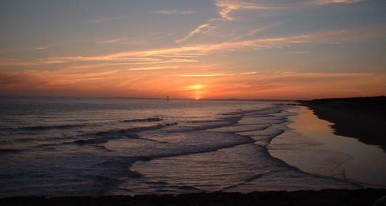
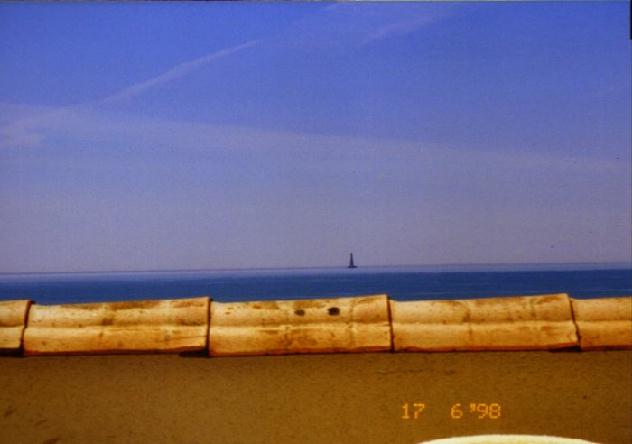

Wonderful sea views from holiday rental apartment near Royan, Charente-Maritime, France

Sunset over the nearby enormous sandy beach, Plage de la Grande Côte
On the unspoilt Côte de Beauté at Saint-Palais-sur-Mer, Charente-Maritime.

The panoramic sea view over the Bay of Biscay from the large south west facing apartment terrace. The 16th century lighthouse is the oldest in France and is visible night and day.
Accommodation comprises a lounge/diner (with sofa bed), kitchenette, double bedroom, bathroom, separate WC and 17sq m sunny S.W. facing terrace.
- Situated ½ mile from Plage de la Grande Côte with its pine forests and sand dunes
- Seasonal shops within 100m including fresh local seafood take-away
- Lots of good local restaurants
- St Palais town centre and daily market just over a mile away
- Accommodation comprises a lobby with two bunk beds, a double bedroom, bathroom, separate wc, lounge/diner (with sofa-bed), kitchenette and large (17 sq.m.) sunny SW facing terrace
- Reserved parking to the rear
- Opposite is the coastal path and a popular fishing stretch (deep sea trips can be organised at the hotel next door)
- Royan Golf Course & Equestrian Centre is 800m away
- Nearby Sailing & Wind Surfing schools
- One of France's finest zoos is at La Palmyre (5km)
Click here for more details